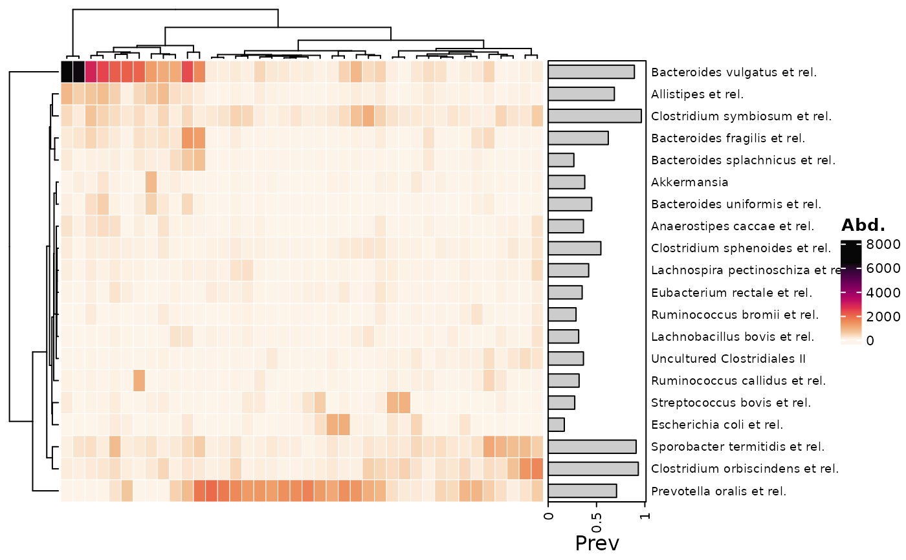
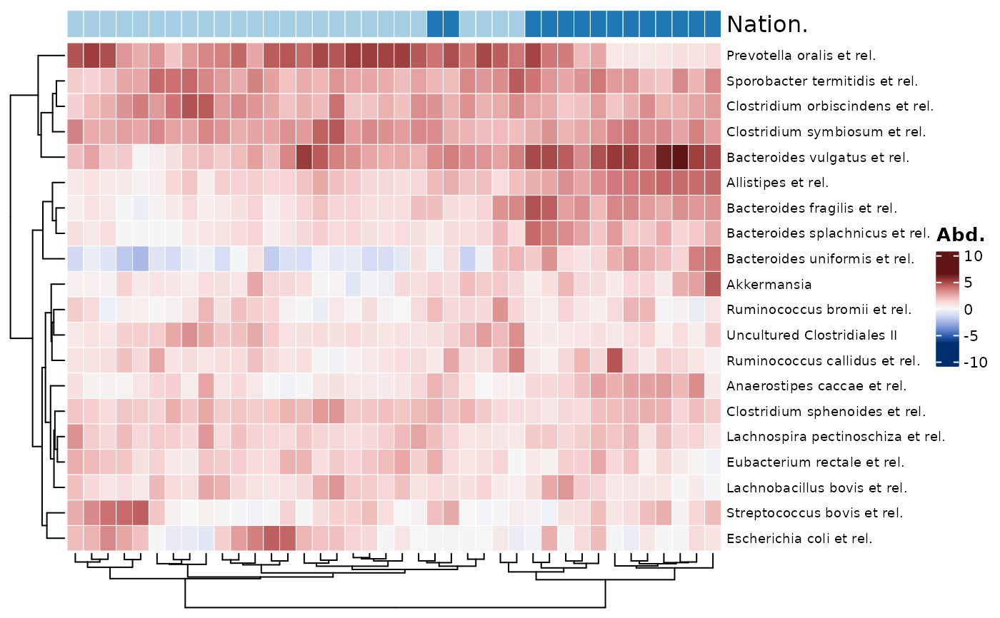
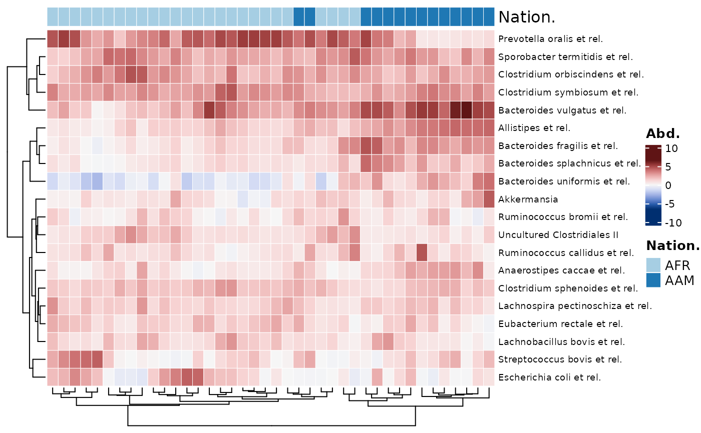

Heatmap made with ComplexHeatmap::Heatmap(),
with optional annotation of taxa prevalence/abundance,
and/or other sample data.
Transform your data with tax_transform() prior to plotting
(and/or scale with tax_scale()).
See the heatmaps vignette for more examples of use.
Plotting "compositional" data can give an idea of the dominant taxa in each sample. Plotting some form of log or clr transformed (or scaled) microbial features can highlight other patterns.
The data will be ordered via your selected seriation methods and distances on either the transformed data (default) or the original count data (or with any other transformation).
Any cell numbers printed can be transformed independently of the colour scheme, and do not affect ordering.
comp_heatmap(
data,
taxa = NA,
taxa_side = "right",
tax_anno = NULL,
taxon_renamer = identity,
samples = NA,
sample_side = adjacent_side(taxa_side),
sample_anno = NULL,
sample_names_show = FALSE,
colors = heat_palette(palette = "Rocket", rev = TRUE),
numbers = NULL,
sample_seriation = "OLO_ward",
sample_ser_dist = "euclidean",
sample_ser_counts = !sample_ser_dist %in% c("euclidean", "maximum", "manhattan",
"canberra", "binary"),
sample_ser_trans = NULL,
tax_seriation = "OLO_ward",
tax_ser_dist = "euclidean",
tax_ser_counts = FALSE,
tax_ser_trans = NULL,
numbers_trans = NULL,
numbers_zero_replace = 0,
numbers_use_counts = TRUE,
grid_col = "white",
grid_lwd = 0.5,
name = "Abd.",
anno_tax = NULL,
...
)phyloseq or phyloseq extra
list of taxa to include, or NA for all
"top"/"right"/"bottom"/"left": controls heatmap orientation and where any annotations specified in tax_anno are placed
NULL or annotation function for taxa: taxAnnotation() output.
function to rename taxa before plotting
list of samples to include on plot
which side to show any sample annotation on, must be adjacent to taxa_side
NULL or annotation function for samples: sampleAnnotation() output.
show sample names? (you can control side and rotation of names with other ComplexHeatmap::Heatmap arguments)
output of heat_palette() to set heatmap fill color scheme
output of heat_numbers() to draw numbers on heatmap cells
name of method used to order the samples (from seriation::seriate)
name of distance to use with sample_seriation method (if needed)
insist on using count data for sample seriation?
function for transformation of data used for sample seriation
(such as a call to tax_transform())
name of method used to order the taxa (from seriation::seriate)
name of distance to use with tax_seriation method (if needed)
insist on using count data for taxa seriation?
function for transformation of data used for taxa seriation
(such as a call to tax_transform())
name of tax_transform transformation, or a function for transformation of data used for drawing numbers on cells
zero replacement method used if named transformation given to number_trans
insist on using count data for number drawing? (if TRUE, any numbers_trans transformation would be applied to count data)
colour of gridlines, or NA for none
width of gridlines
used as legend title (colourbar)
DEPRECATED: optional annotation of taxa distributions: tax_anno() list output, or a pre-made ComplexHeatmap HeatmapAnnotation
Arguments passed on to ComplexHeatmap::Heatmap
row_dend_sideShould the row dendrogram be put on the left or right of the heatmap?
row_dend_widthWidth of the row dendrogram, should be a unit object.
show_row_dendWhether show row dendrogram?
row_dend_gpGraphic parameters for the dendrogram segments. If users already provide a dendrogram object with edges rendered, this argument will be ignored.
show_row_namesWhether show row names.
row_names_gpGraphic parameters for row names.
row_names_rotRotation of row names.
row_names_centeredShould row names put centered?
library(dplyr)
#>
#> Attaching package: ‘dplyr’
#> The following objects are masked from ‘package:stats’:
#>
#> filter, lag
#> The following objects are masked from ‘package:base’:
#>
#> intersect, setdiff, setequal, union
data("dietswap", package = "microbiome")
# create a couple of numerical variables to use
psq <- dietswap %>%
ps_mutate(
weight = recode(bmi_group, obese = 3, overweight = 2, lean = 1),
female = if_else(sex == "female", true = 1, false = 0),
african = if_else(nationality == "AFR", true = 1, false = 0)
)
psq <- tax_filter(psq, min_prevalence = 1 / 10, min_sample_abundance = 1 / 10)
#> Proportional min_prevalence given: 0.1 --> min 23/222 samples.
psq <- tax_agg(psq, "Genus")
# randomly select 20 taxa from the 40 top taxa, and 40 random samples
set.seed(123)
taxa <- sample(tax_top(psq, n = 40), size = 20)
samples <- sample(1:122, size = 40)
comp_heatmap(data = psq, taxa = taxa, samples = samples)
# transforming taxon abundances #
# NOTE: if you plan on transforming taxa (e.g. to compositional data or clr)
# but only want to plot a subset of the taxa (e.g. most abundant)
# you should NOT subset the original phyloseq before transformation!
# Instead, choose the subset of taxa plotted with:
# Note 2, choose a symmetrical palette for clr-transformed data
psq %>%
tax_transform("clr", zero_replace = "halfmin") %>%
comp_heatmap(
taxa = taxa, samples = samples, colors = heat_palette(sym = TRUE)
)
# Almost all the taxa have high values (>> 0) because they are a highly
# abundant subset taken after clr transformation was calculated on all taxa
# See how just taking the first 30 taxa from the dataset gives more balance
psq %>%
tax_transform("clr", zero_replace = "halfmin") %>%
comp_heatmap(
taxa = 1:30, samples = samples, colors = heat_palette(sym = TRUE)
)
# annotating taxa #
# Notes:
# - Unlike cor_heatmap, taxa are not annotated by default
# - Detection threshold set to 50 as HITchip example data seems to have background noise
comp_heatmap(
data = psq, taxa = taxa, samples = samples,
tax_anno = taxAnnotation(Prev = anno_tax_prev(undetected = 50))
)

# annotating samples #
htmp <- psq %>%
tax_transform("clr", zero_replace = "halfmin") %>%
comp_heatmap(
taxa = taxa, samples = samples, colors = heat_palette(sym = TRUE),
sample_anno = sampleAnnotation(
Nation. = anno_sample_cat("nationality", legend_title = "Nation.")
)
)
#> Warning: coercing non-character anno_cat annotation data to character
htmp

# legends from `anno_sample_cat()` are stored as an attribute of the Heatmap
ComplexHeatmap::draw(
object = htmp,
annotation_legend_list = attr(htmp, "AnnoLegends"), merge_legends = TRUE
)
